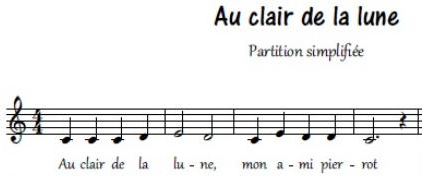

|
ACTIVITĒ 3 |

Exercices sur l'utilisation des Buzzers et/ou haut-parleurs
Objectif
Programmer une mélodie à écouter sur le Buzzer ou le mini haut parleur.
Exercice 3A
Envoyer la note « la » sur le Buzzer lorsque le bouton poussoir jaune est activé.
Programme Ardublock à réaliser donné ci-dessous :
Enregistrer le programme ArduBlock sous le nom Exercice3A_votrenomdegroupe.
Transférer le programme et vérifier qu'il fonctionne correctement.
Modifier la valeur 440, que constatez vous ?
Exercice 3B
Modifier le programme précédent, afin de programmer une mélodie à écouter sur le Buzzer lorsque le bouton poussoir jaune est activé.
Programme Ardublock à réaliser donné ci-dessous :
Enregistrer le programme ArduBlock sous le nom Exercice3B_votrenomdegroupe.
Transférer le programme et vérifier qu'il fonctionne correctement.
Exercice 3C
Modifier ce programme afin de pouvoir écouter « au clair de la lune »

Tableau des notes de musique sous Arduino :
Dans la gamme 3, la fréquence du DO est 262, celle du RÉ 294, celle du MI 330.
On choisira des durées de 400 ms pour les noires.
Calculez les autres durées.
Vous en savez maintenant assez pour programmer ce morceau.
Enregistrer le programme ArduBlock sous le nom Exercice3C_votrenomdegroupe.
Transférer le programme et vérifier qu'il fonctionne correctement.
Exercice 3D
Modifier ce programme afin de pouvoir écouter une musique de votre choix.
Trouver la partition, et programmer votre propre mélodie.
Enregistrer le programme ArduBlock sous le nom Exercice3D_votrenomdegroupe.
Transférer le programme et vérifier qu'il fonctionne correctement.
Fin de l'activité 3 sur l'utilisation des boutons poussoirs, vous pouvez passer à l'activité suivante : Activité 4 sur l'utilisation du servomoteur.
Créé avec HelpNDoc Personal Edition: Générateur de documentation complet